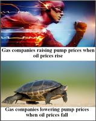

Nvidia is preparing to launch an open-source AI agent platform called NemoClaw, designed to compete with the likes of OpenClaw. According to Wired, the platform will allow enterprise software companies to dispatch AI agents to perform tasks for their own workforces. "Companies will be able to access the platform regardless of whether their products run on Nvidia's chips," the report adds. From the report: The move comes as Nvidia prepares for its annual developer conference in San Jose next week. Ahead of the conference, Nvidia has reached out to companies including Salesforce, Cisco, Google, Adobe, and CrowdStrike to forge partnerships for the agent platform. It's unclear whether these conversations have resulted in official partnerships. Since the platform is open source, it's likely that partners would get free, early access in exchange for contributing to the project, sources say. Nvidia plans to offer security and privacy tools as part of this new open-source agent platform. [...]
For Nvidia, NemoClaw appears to be part of an effort to court enterprise software companies by offering additional layers of security for AI agents. It's also another step in the company's embrace of open-source AI models, part of a broader strategy to maintain its dominance in AI infrastructure at a time when leading AI labs are building their own custom chips. Nvidia's software strategy until now has been heavily reliant on its CUDA platform, a famously proprietary system that locks developers into building software for Nvidia's GPUs and has created a crucial "moat" for the company.
Read more of this story at Slashdot.
Meta will begin charging advertisers a 2-5% "location fee" to offset digital services taxes imposed by several European countries, including the UK, France, Italy, Spain, Austria, and Turkey. Reuters reports: The fee, for image or video ads delivered on Meta platforms including WhatsApp click-to-message campaigns and marketing messages together with ads, will apply from July 1 and will also cover other government-imposed levies. "Until now, Meta has covered these additional costs. These changes are part of Meta's ongoing effort to respond to the evolving regulatory landscape and align with industry standards," the company said in the blog.
The location fees are determined by where the audience is located and not the advertisers' business location. Meta listed six countries where the fees will apply, ranging from 2% in the United Kingdom to 3% in France, Italy and Spain and 5% in Austria and Turkey.
Read more of this story at Slashdot.
Van Allen Probe A, a 1,300-pound (600 kg) NASA satellite launched in 2012 to study Earth's radiation belts, is expected to re-enter Earth's atmosphere this week. While most of it is expected to burn up during descent, "some components may survive," reports the BBC. "The space agency said there is a one in 4,200 chance of being harmed by a piece of the probe, which it characterized as 'low' risk." From the report: The spacecraft is projected to re-enter around 19:45 EST (00:45 GMT) on Tuesday the U.S. Space Force predicted, according to Nasa, though there is a 24-hour margin of "uncertainty" in the timing. [...] The spacecraft and its twin, Van Allen Probe B, were on a mission to gather unprecedented data on Earth's two permanent radiation belts. It was not immediately clear where in Earth's atmosphere the satellite is projected to re-enter. NASA and the U.S. Space Force has said it will monitor the re-entry and update any predictions. [...] Van Allen Probe B is not expected to re-enter the Earth's atmosphere before 2030.
Read more of this story at Slashdot.
An anonymous reader quotes a report from the Financial Times: Amazon's ecommerce business has summoned a large group of engineers to a meeting on Tuesday for a "deep dive" into a spate of outages, including incidents tied to the use of AI coding tools. The online retail giant said there had been a "trend of incidents" in recent months, characterized by a "high blast radius" and "Gen-AI assisted changes" among other factors, according to a briefing note for the meeting seen by the FT. Under "contributing factors" the note included "novel GenAI usage for which best practices and safeguards are not yet fully established."
"Folks, as you likely know, the availability of the site and related infrastructure has not been good recently," Dave Treadwell, a senior vice-president at the group, told employees in an email, also seen by the FT. The note ahead of Tuesday's meeting did not specify which particular incidents the group planned to discuss. [...] Treadwell, a former Microsoft engineering executive, told employees that Amazon would focus its weekly "This Week in Stores Tech" (TWiST) meeting on a "deep dive into some of the issues that got us here as well as some short immediate term initiatives" the group hopes will limit future outages.
He asked staff to attend the meeting, which is normally optional. Junior and mid-level engineers will now require more senior engineers to sign off any AI-assisted changes, Treadwell added. Amazon said the review of website availability was "part of normal business" and it aims for continual improvement. "TWiST is our regular weekly operations meeting with a specific group of retail technology leaders and teams where we review operational performance across our store," the company said.
Read more of this story at Slashdot.
An anonymous reader quotes a report from IEEE Spectrum: Worried that your latest ask to a cloud-based AI reveals a bit too much about you? Want to know your genetic risk of disease without revealing it to the services that compute the answer? There is a way to do computing on encrypted data without ever having it decrypted. It's called fully homomorphic encryption, or FHE. But there's a rather large catch. It can take thousands -- even tens of thousands -- of times longer to compute on today's CPUs and GPUs than simply working with the decrypted data. So universities, startups, and at least one processor giant have been working on specialized chips that could close that gap. Last month at the IEEE International Solid-State Circuits Conference (ISSCC) in San Francisco, Intel demonstrated its answer, Heracles, which sped up FHE computing tasks as much as 5,000-fold compared to a top-of the-line Intel server CPU.
Startups are racing to beat Intel and each other to commercialization. But Sanu Mathew, who leads security circuits research at Intel, believes the CPU giant has a big lead, because its chip can do more computing than any other FHE accelerator yet built. "Heracles is the first hardware that works at scale," he says. The scale is measurable both physically and in compute performance. While other FHE research chips have been in the range of 10 square millimeters or less, Heracles is about 20 times that size and is built using Intel's most advanced, 3-nanometer FinFET technology. And it's flanked inside a liquid-cooled package by two 24-gigabyte high-bandwidth memory chips—a configuration usually seen only in GPUs for training AI.
In terms of scaling compute performance, Heracles showed muscle in live demonstrations at ISSCC. At its heart the demo was a simple private query to a secure server. It simulated a request by a voter to make sure that her ballot had been registered correctly. The state, in this case, has an encrypted database of voters and their votes. To maintain her privacy, the voter would not want to have her ballot information decrypted at any point; so using FHE, she encrypts her ID and vote and sends it to the government database. There, without decrypting it, the system determines if it is a match and returns an encrypted answer, which she then decrypts on her side. On an Intel Xeon server CPU, the process took 15 milliseconds. Heracles did it in 14 microseconds. While that difference isn't something a single human would notice, verifying 100 million voter ballots adds up to more than 17 days of CPU work versus a mere 23 minutes on Heracles.
Read more of this story at Slashdot.
Last November, Amazon sued Perplexity demanding that the AI search startup stop allowing its AI browser agent, Comet, to make purchases for users online. Today, a judge ruled in favor of the tech giant, granting it a temporary court injunction blocking the scraping of Amazon's website. According to court filings, the judge found strong evidence the tool accessed the retailer's systems "without authorization." CNBC reports: In a ruling dated Monday, U.S. District Judge Maxine Chesney wrote that Amazon has provided "strong evidence" that Perplexity's Comet browser accessed its website at the user's direction, but "without authorization" from the e-commerce giant. Chesney said Amazon submitted "essentially undisputed evidence" that it spent more than $5,000 to respond to the issue, including "numerous hours" where its employees worked to develop tools to block Comet from accessing its private customer tools and to prevent the tool from "future unauthorized access." "Given such evidence, the Court finds Amazon has shown a likelihood of success on the merits of its claim," Chesney wrote.
Chesney's ruling includes a weeklong stay to allow Perplexity to appeal the order. Amazon wrote in its original complaint that Perplexity's agents posed security risks to customer data because they "can act within protected computer systems, including private customer accounts requiring a password." The company also said Perplexity's agents created challenges for the company's advertising business, because when AI systems generate ad traffic, the impressions have to be detected and filtered out before advertisers can be billed. "This requires modifications to Amazon's advertising systems, including developing new detection mechanisms to identify and exclude automated traffic," Amazon wrote in its complaint. "These system adaptations are necessary to maintain contractual obligations with advertisers who pay only for legitimate human impressions."
Read more of this story at Slashdot.
sziring shares a report from Business Insider: Silicon Valley has long competed for talent with ever-richer pay packages built around salary, bonus, and equity. Now, a fourth line item is creeping into the mix: AI inference. As generative AI tools become embedded in software development, the cost of running the underlying models -- known as inference -- is emerging as a productivity driver and a budget line that finance chiefs can't ignore.
Software engineers and AI researchers inside tech companies have already been jousting for access to GPUs, with this AI compute capacity being carefully parceled out based on which projects are most important. Now, some tech job candidates have begun asking about what AI compute budget they will have access to if they decide to join.
"I am increasingly asked during candidate interviews how much dedicated inference compute they will have to build with Codex," Thibault Sottiaux, engineering lead at OpenAI's Codex, the startup's AI coding service, wrote on X recently. He added that usage per user is growing much faster than overall user growth, a sign that AI compute is becoming even scarcer and more valuable. That scarcity is reshaping how engineers think about their work and pay. "The inference compute available to you is increasingly going to drive overall software productivity," said OpenAI President Greg Brockman.
The report cites a recent compensation submission from a software engineer that listed "Copilot subscription" as part of the pay and benefits. "OpenAI and Anthropic should create recruitment sites where their clients can advertise roles, listing the token budget for the job alongside the salary range," said Peter Gostev, AI capability lead at Arena, a startup that measures the performance of models.
Tomasz Tunguz of Theory Ventures predicts AI inference will be the fourth component of engineering compensation, alongside salary, bonus, and equity. "Will you be paid in tokens? In 2026, you likely will start to be," Tunguz said.
Read more of this story at Slashdot.
An anonymous reader quotes a report from Ars Technica: Binance is hoping that suing (PDF) The Wall Street Journal for defamation might help shake off a fresh round of government probes into how the cryptocurrency exchange failed to detect $1.7 billion in transfers to a network that was funding Iran-backed terror groups. The lawsuit comes after a Wall Street Journal investigation, based on conversations with insiders and reviews of internal documents, reported that Binance had quietly dismantled its own investigation into the unlawful transfers and then fired compliance staff who initially flagged them.
Alleging that the report falsely accused Binance of retaliation -- among 10 other allegedly false claims -- Binance accused the Journal of conducting a "sham" investigation that intentionally disregarded the company's statements. That included supposedly failing to note that Binance had not closed its investigation into the unlawful transfers. Binance's role in the large-scale violation of US sanctions laws is currently being investigated by the Justice and Treasury Departments. Congress members also took notice, including Sen. Richard Blumenthal (D-Conn.), ranking member of the Senate Permanent Subcommittee on Investigations (PSI), who launched an additional inquiry. In a letter to Binance CEO Richard Teng, Blumenthal cited the Journal's report, as well as reporting from The New York Times and Fortune, while demanding that Binance explain how it managed to overlook the money-laundering for so long and why compliance staff members were fired.
In its complaint Wednesday, Binance claimed that these probes may "be just the tip of the iceberg" if the record is not corrected. The reputational harm is particularly damaging, the exchange noted, since Binance has allegedly worked hard to strengthen its compliance after reaching a settlement with the US government in 2023. In taking that plea deal, Binance admitted to violating anti-money laundering and sanctions laws and paid a $4.3 billion fine, and its founder, Changpeng Zhao, eventually pled guilty to a related charge. Since that scandal, Binance claimed that the WSJ has "made a business of maligning both the cryptocurrency industry generally and Binance specifically." That's why the Journal allegedly rushed to publish its story following a similar New York Times investigation. Alleging that the WSJ was financially motivated to publish a negative story that would get more clicks, Binance claimed the Journal provided little time to respond and then failed to make necessary corrections before and after publication.
Read more of this story at Slashdot.
YouTube is expanding its AI deepfake detection tools to a pilot group of politicians, government officials, and journalists, allowing them to identify and request removal of unauthorized AI-generated videos impersonating them. TechCrunch reports: The technology itself launched last year to roughly 4 million YouTube creators in the YouTube Partner Program, following earlier tests. Similar to YouTube's existing Content ID system, which detects copyright-protected material in users' uploaded videos, the likeness detection feature looks for simulated faces made with AI tools. These tools are sometimes used to try to spread misinformation and manipulate people's perception of reality, as they leverage the deepfaked personas of notable figures -- like politicians or other government officials -- to say and do things in these AI videos that they didn't in real life.
With the new pilot program, YouTube aims to balance users' free expression with the risks associated with AI technology that can generate a convincing likeness of a public figure. [...] [Leslie Miller, YouTube's vice president of Government Affairs and Public Policy] explained that not all of the detected matches would be removed when requested. Instead, YouTube would evaluate each request under its existing privacy policy guidelines to determine whether the content is parody or political critique, which are protected forms of free expression. The company noted it's advocating for these protections at a federal level, too, with its support for the NO FAKES Act in D.C., which would regulate the use of AI to create unauthorized recreations of an individual's voice and visual likeness.
To use the new tool, eligible pilot testers must first prove their identity by uploading a selfie and a government ID. They can then create a profile, view the matches that show up, and optionally request their removal. YouTube says it plans to eventually give people the ability to prevent uploads of violating content before they go live or, possibly, allow them to monetize those videos, similar to how its Content ID system works. The company would not confirm which politicians or officials would be among its initial testers, but said the goal is to make the technology broadly available over time.
Read more of this story at Slashdot.
ASUS says the MacBook Neo is a "shock" to the Windows PC ecosystem. "In the past, Apple's pricing situation has always been high, so for them to release a very budget-friendly product, this is obviously a shock to the entire industry," said ASUS co-CEO S.Y. Hsu in a Tuesday earnings call. While he expects PC makers to respond, rising AI-driven memory shortages could push hardware prices higher across the industry. PCMag reports: Hsu said he believes all the PC players -- including Microsoft, Intel, and AMD -- take the MacBook Neo threat seriously. "In fact, in the entire PC ecosystem, there have been a lot of discussions about how to compete with this product," he added, given that rumors about the MacBook Neo have been making the rounds for at least a year. Despite the competitive threat, Hsu argued that the MacBook Neo could have limited appeal. He pointed to the laptop's 8GB of "unified memory," or what amounts to its RAM, and how customers can't upgrade it.
He also described the MacBook Neo as a "content consumption" device, similar to an iPad. "This is different from the use case of a mainstream notebook," which can handle more compute-intensive tasks, Hsu said. "How big of an impact [the MacBook Neo] will have on the PC industry will still require some time for us to observe," Hsu said while suggesting it might not gain traction among Windows PC users due to software differences. "Of course, the entire Windows PC ecosystem will push out products to compete against Apple," he added.
Read more of this story at Slashdot.
An anonymous reader quotes a report from Wired: Advanced Machine Intelligence (AMI), a new Paris-based startup cofounded by Meta's former chief AI scientist Yann LeCun, announced Monday it has raised more than $1 billion to develop AI world models. LeCun argues that most human reasoning is grounded in the physical world, not language, and that AI world models are necessary to develop true human-level intelligence. "The idea that you're going to extend the capabilities of LLMs [large language models] to the point that they're going to have human-level intelligence is complete nonsense," he said in an interview with WIRED.
The financing, which values the startup at $3.5 billion, was co-led by investors such as Cathay Innovation, Greycroft, Hiro Capital, HV Capital, and Bezos Expeditions. Other notable backers include Mark Cuban, former Google CEO Eric Schmidt, and French billionaire and telecommunications executive Xavier Niel. AMI (pronounced like the French word for friend) aims to build "a new breed of AI systems that understand the world, have persistent memory, can reason and plan, and are controllable and safe," the company says in a press release. The startup says it will be global from day one, with offices in Paris, Montreal, Singapore, and New York, where LeCun will continue working as a New York University professor in addition to leading the startup. AMI will be the first commercial endeavor for LeCun since his departure from Meta in November 2025. [...]
LeCun says AMI aims to work with companies in manufacturing, biomedical, robotics, and other industries that have lots of data. For example, he says AMI could build a realistic world model of an aircraft engine and work with the manufacturer to help them optimize for efficiency, minimize emissions, or ensure reliability. LeCun says AMI will release its first AI models quickly, but he's not expecting most people to take notice. The company will first work with partners such as Toyota and Samsung, and then will learn how to apply its technology more broadly. Eventually, he says, AMI intends to develop a "universal world model," which would be the basis for a generally intelligent system that could help companies regardless of what industry they work in. "It's very ambitious," he says with a smile.
Read more of this story at Slashdot.
Valve is facing a new consumer class-action lawsuit two weeks after New York sued the video game company for "letting children and adults illegally gamble" with loot boxes. The new lawsuit is similar, alleging that loot boxes in games like Counter-Strike 2, Dota 2, and Team Fortress 2 are "carefully engineered to extract money from consumers, including children, through deceptive, casino-style psychological tactics."
"We believe Valve deliberately engineered its gambling platform and profited enormously from it," Steve Berman, founder and managing partner at law firm Hagens Berman, said in a press release. "Consumers played these games for entertainment, unaware that Valve had allegedly already stacked the odds against them. We intend to hold Valve accountable and put money back in the pockets of consumers." PC Gamer reports: The system is well known to anyone who's played a Valve multiplayer game: Earn a locked loot box by playing, pay $2.50 for a key, unlock it, get a digital doohickey that's sometimes worth hundreds or even thousands of dollars but far more often is worth just a few pennies. Is that gambling? If these cases go to court, we'll find out.
The full complaint points out that the unlocking process is even designed to look like a slot machine: "Images of possible items scroll across the screen, spinning fast at first, then slowing to a stop on the player's 'prize.' Players buy and open loot boxes for the same reason people play slot machines -- the hope of a valuable payout." Loot boxes, the complaint continues, are not "incidental features" of Valve's games, but rather "a deliberate, carefully engineered revenue model." So too is the Steam Community Market, and Steam itself, which the suit claims is "deliberately designed" to enable the sale of digital items on third-party marketplaces through "trade URLs," despite Valve's terms of service prohibiting off-platform sales.
And while the debate over whether loot boxes constitute a form of gambling continues to rage, the suit claims Valve's system does indeed qualify under Washington law, which defines gambling as "staking or risking something of value upon the outcome of a contest of chance or a future contingent event not under the person's control or influence." "Valve's loot boxes satisfy every element of this definition," the lawsuit alleges. "Users stake money (the price of a key) on the outcome of a contest of chance (the random selection of a virtual item), and the items received are 'things of value' under RCW 9.46.0285 because they can be sold for real money through Valve's own marketplace and through third-party marketplaces that Valve has fostered and facilitated."
Read more of this story at Slashdot.
An anonymous reader quotes a report from Bloomberg: Chinese authorities moved to restrict state-run enterprises and government agencies from running OpenClaw AI apps on office computers, acting swiftly to defuse potential security risks after companies and consumers across China began experimenting with the agentic AI phenomenon. Government agencies and state-owned enterprises, including the largest banks, have received notices in recent days warning them against installing OpenClaw software on office devices for security reasons [...]. Several of them were instructed to notify superiors if they had already installed related apps for security checks and possible removal, some of the people said.
Certain employees, including those at state-run banks and some government agencies, were banned from installing OpenClaw on office computers and also personal phones using the company's network, some of the people said. One person said the ban was also extended to the families of military personnel. Other notices stopped short of calling for an outright ban on OpenClaw software, saying only that prior approval is needed before use, the people said. The warning underscores Beijing's growing concern about OpenClaw, an agentic AI platform that requires unusually broad access to private data and can communicate externally, potentially exposing computers to external attack. [...]
Despite the potential security risks, companies from Tencent to JD.com Inc. have been rolling out OpenClaw apps to try and capitalize on the groundswell of enthusiasm, while several local government agencies have declared millions of yuan in subsidies for companies that develop atop the platform. [...] Tech giants like Tencent and Alibaba, along with AI upstarts ranging from Moonshot to MiniMax, have rolled out their own tweaks of the software touting simple, one-click adoption. A slew of government agencies, in cities from Shenzhen to Wuxi, have issued notices offering multimillion-yuan subsidies to startups leveraging OpenClaw to make advances. The frenzy has helped drive up shares of AI model developer MiniMax nearly 640% since its listing just two months ago. It's now worth about $49 billion, surpassing Baidu -- once viewed as the frontrunner in Chinese AI development -- in market value. The company launched MaxClaw, an agent built on OpenClaw, in late February.
Read more of this story at Slashdot.
Tony Hoare, the Turing Award-winning pioneer who created the Quicksort algorithm, developed Hoare logic, and advanced theories of concurrency and structured programming, has died at age 92.
News of his passing was shared today in a blog post. The site I Programmer also commemorated Hoare in a post highlighting his contributions to computer science and the lasting impact of his work. Personal accounts have been shared on Hacker News and Reddit.
Many Slashdotters may know Hoare for his aphorism regarding software design: "There are two ways of constructing a software design: One way is to make it so simple that there are obviously no deficiencies, and the other way is to make it so complicated that there are no obvious deficiencies. The first method is far more difficult."
Read more of this story at Slashdot.
AT&T plans to invest more than $250 billion over the next five years to expand U.S. telecom infrastructure for the AI age. The company says it will also hire thousands of technicians while partnering with AST SpaceMobile to extend coverage to remote areas. Reuters reports: Rapid adoption of artificial intelligence, cloud computing and connected devices has prompted telecom operators to invest heavily in fiber and 5G networks as they also seek to fend off intensifying competition from cable broadband providers. AT&T, which has about 110,000 employees in the U.S., said the new hires will help build and maintain its infrastructure. The outlay includes capital expenditure and other spending, the company said.
The spending will focus on expanding its fiber and wireless networks, including accelerating deployment of fiber broadband, 5G home internet and satellite connectivity to extend coverage across urban, suburban and rural areas. [...] AT&T is also working with satellite partner AST SpaceMobile to expand connectivity to remote regions where traditional network infrastructure is difficult to deploy. The company said it would continue spending on the FirstNet network built for first responders and bolster investment in network security and artificial intelligence-driven threat detection.
Read more of this story at Slashdot.
James Rundle / Wall Street Journal : US medtech giant Stryker suffers a global outage after a cyberattack; staff and contractors say an Iran-linked hacking group's logo appeared on login pages — Global outage affects U.S. medtech company; some staff devices remotely wiped — Medical technology giant Stryker is experiencing …
Bloomberg : Sources: Ripple kicks off a share buyback at a $50B valuation to repurchase up to $750M in shares from investors and employees in a tender offer through April — Ripple has kicked off a share buyback that would value the company at $50 billion, cementing it as one of the most valuable digital-asset firms …
Sabrina Ortiz / The Deep View : Anthropic says Claude for Excel and Claude for PowerPoint now share full context across open files, and skills are available inside Excel and PowerPoint add-ins — W — hile Anthropic doesn't offer a productivity suite of apps like Google or Microsoft, it is expanding its integrations with Microsoft 365 applications.
Bloomberg : Amazon raised €14.5B in its euro bond market debut, the biggest ever corporate deal in the currency, following a dollar offering on Tuesday that raised $37B — Amazon.com Inc. raised €14.5 billion ($16.8 billion) in its euro bond market debut, the biggest ever corporate deal in the currency …
Sarah Perez / TechCrunch : WordPress debuts my.WordPress.net, which lets users run WordPress entirely in the browser to set up a private workspace not accessible from the public internet — WordPress's publishing software can now run entirely in the web browser, the organization behind the open source publishing software announced on Wednesday.
Grace Kay / Business Insider : Sources: xAI's AI agent project Macrohard has stalled as Tesla ramps up its own AI agent project Digital Optimus; Elon Musk says it is a joint xAI-Tesla project — Follow Grace Kay … - XAI's Macrohard project has stalled amid leadership changes and a data project pause.
Jesus Diaz / Fast Company : Canva launches Magic Layers, an AI tool that turns a flat bitmap image into a fully editable Canva project by extracting text and objects into individual layers — The newly launched Magic Layers feature dissects flat images into native objects, putting an end to the frustrating era of pixel-locked assets.
Financial Times : Revolut says it has secured a full banking license from UK regulators after a four-year wait, allowing the company to expand lending to its 13M UK customers — Permit is crucial to growth strategy of Europe's most valuable fintech — Revolut has secured a full banking licence from UK regulators …
Ivan Mehta / TechCrunch : WhatsApp adds parent-managed accounts for users under the age of 13 and says the accounts will not get access to features like Meta AI, Channels, or Status — WhatsApp launched a new set of parent-supervised accounts for users under the age of 13 on Wednesday.
James Manso / WWD : Online DTC luxury brand Quince raised a $500M Series E led by Iconiq at a $10.1B valuation; it recently launched in Canada and its revenue topped $1B in 2025 — The quickly growing company's revenues topped $1 billion last year. — Quince has a fresh infusion of cash.
Kate Clark / Wall Street Journal : Rivian CEO RJ Scaringe's Mind Robotics, which is building AI-powered factory robots, raised $500M led by Accel and a16z, source says at a $2B valuation — Mind Robotics is building factory robots, joining up with the electric-vehicle maker on training and testing
Lily Mae Lazarus / Fortune : Axiamatic, which offers an “agentic control plane” to manage large-scale enterprise transformations, emerges from stealth with $54M from Greylock and Bessemer — Enterprise transformations are one of the biggest line items in corporate budgets—and one of the easiest ways to light money on fire.
Angus Loten / Wall Street Journal : Kai, which is developing an AI-enabled cyber platform, raised $125M in a combined seed and Series A round led by Evolution Equity Partners — The year-old firm joins a surge of new ventures cashing in on booming investor demand for smart cyber tools — Kai, an artificial intelligence …
Bloomberg : Meta unveils four new chips, the MTIA 300, MTIA 400, MTIA 450, and MTIA 500, set to launch by the end of 2027; the MTIA 300 is in production for content ranking — Meta Platforms Inc. plans to deploy four new generations of its in-house artificial intelligence chips by the end of 2027 …
Financial Times : Investors flee to Magnificent Seven stocks due to the US-led war in Iran; tech is up 1.5% from February 27, the only S&P 500 sector to rise since the strikes — Megacap companies previously out of favour now seen as ‘safety assets’ — Investors have sought shelter from the turmoil …